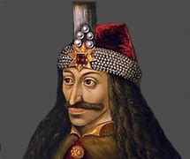
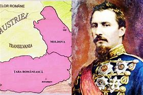
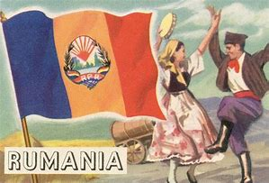

Ancient Dacia and Roman Conquest

Romanian history begins with the ancient Dacians, a powerful civilization in the Carpathian region known for their resilience and rich culture. In 106 AD, the Roman Empire, under Emperor Trajan, conquered Dacia, integrating it into the empire. This period left a lasting legacy, including Latin as the linguistic foundation for the Romanian language. Roman influence is evident in artifacts, architecture, and the enduring pride in Dacia's resistance and subsequent Romanization.
Medieval Principalities
During the Middle Ages, the regions of Wallachia, Moldavia, and Transylvania emerged as distinct political entities. Leaders like Vlad the Impaler defended these principalities against external threats, particularly the Ottoman Empire, which exerted significant influence.
Unification and Nationhood
The 19th century marked a turning point with the unification of Wallachia and Moldavia in 1859, laying the foundation for modern Romania. The leadership of Alexandru Ioan Cuza initiated reforms that strengthened the new state. Romania gained independence from the Ottoman Empire in 1877 and achieved full unification with Transylvania in 1918, following World War I.
Modern History and Communist Era
The 20th century brought dramatic changes, including World War II and the rise of communism. Under Nicolae Ceaușescu's regime, Romania experienced both industrialization and oppression, culminating in economic hardship and the 1989 revolution. The fall of communism marked a new era of democracy and integration into Western institutions like NATO and the European Union. Today, Romania reflects on its tumultuous history as it navigates its place in the modern world.